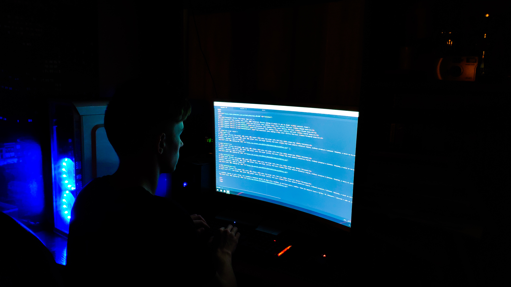

Программирование
Мне очень нравится сидеть за компьютером. В компьютере я играю, работаю в adobe photoshop или adobe experience design. В первой программе я обрабатываю фото, кстати, ещё я люблю фотографировать. Во второй программе я создаю макеты будующих сайтов. Также за компьютером люблю делать сайты на html и css. Пока этим я занисаюсь на любительском уровне, но я собираюсь и дальше получать знания и умения в данной сфере и связать свою жизнь с этим.
Развиваюсь
Я люблю учиться и получать знания, поэтому я часто в своё свободное время смотрю научные каналы на ютубе, такие как: Топлес, Научпок, Простые мысли, MyGap, Нестор и много других. Но помимо научных каналов, я смотрю и другие, чтобы развиваться во всём. Также я люблю смотреть видео на ютубе про математику и физику: разные опыты или же просто какие-то задачки.

Спорт
Мне очень нравится заниматься спортом, особенно интересно в компании. Например, в школе мы постоянно собираемся, чтобы поиграть в школьном зале в волейбол. От этого я получаю большее удовольствие, и не только потому, что я занимаюсь спортом, но ещё и потому, что я нахожусь в окружении друзей. Во время игры в волейбол, мы постоянно шутим и смеёмся. Также мне нравится играть в футбол. Мы собираемся с друзьями и идём на стадион.
Развлечения
Также я люблю веселиться и развлекаться с друзьями, мы гуляем и шутим. Или же я смотрю какие-то видео на ютубе или смотрю фильм, причём жанр не важен, главное чтобы нравилось мне. Также я люблю просто общаться с людьми, узнавать от них что-то новое, а если нет возможности говорить в живую, можно переписываться в социальных сетях.